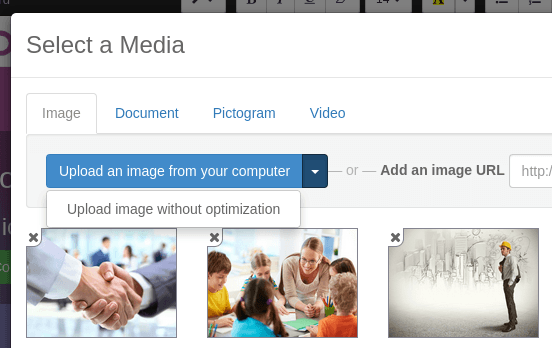
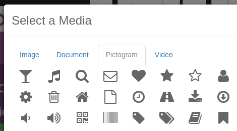
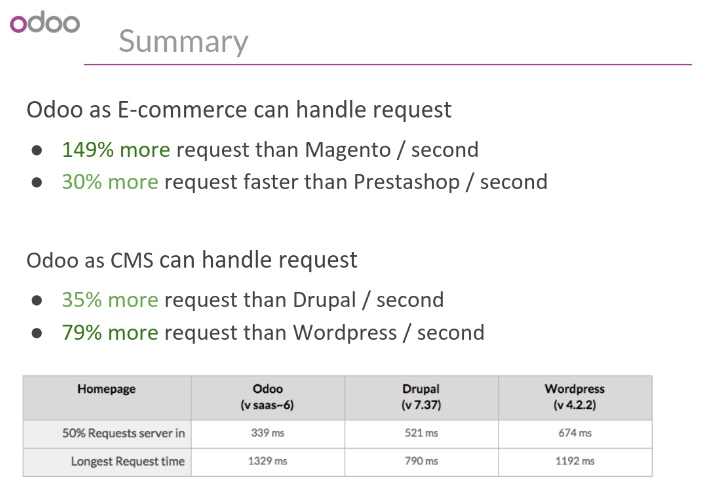
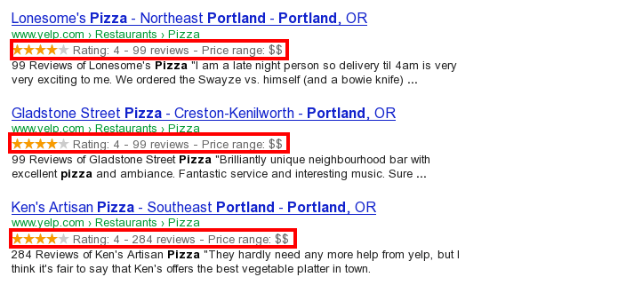

Как Odoo управляет SEO?
Поисковая оптимизация (SEO) представляет собой набор best практик, чтобы ваш оптимизированный сайт лучше ранжировался в поисковых системах таких, как Google и Yandex. Качественная поисковая оптимизация позволяет вам получить больше клиентов.
Вот некоторые примеры SEO: страницы вашего сайта должны быстро загружаться, на каждой странице должен быть один и только один тег <h1>, ваш сайт должен иметь /sitemap.xml файл и т.д.
Конструктор сайтов Odoo одной из самых SEO оптимизированных CMS. В Odoo SEO в приоритете. Для того чтобы ваш сайт был гарантированно имел хорошую поисковую оптимизацию, Odoo берет все технические аспекты SEO на себя, а вы получаете великолепный результат.
Скорость загрузки страниц
Введение
Время загрузки страницы является важным критерием для поисковых систем. Более быстрый веб-сайт не только повышает эффективность работы с вашими посетителями, но поисковые системы дают вам лучшее ранжирование страниц, чем у ваших конкуренты. Некоторые исследования показали, что если уменьшить время загрузки страниц в 2 раза (например, 2 секунды вместо 4), показатель отказов также уменьшится в 2 раза. (например с 25% до 12,5%). Одна лишняя секунда загрузки страницы может стоить 1,6 млрд долларов США для Amazon.

Хорошая новость - Odoo делает все за Вас. Ниже описаны приемы, с помощью которых Odoo уменьшает время загрузки страниц. Вы можете сравнить рейтинг скорости загрузки вашего сайта с помощью этих двух инструментов:
Статические ресурсы: CSS
Все CSS-файлы проходят предварительную обработку, склеиваются, сжимаются и кешируются (на стороне сервера и браузера). Как результат:
для загрузки страницы нужен только один запрос для загрузки CSS
CSS-файл кешируется в браузере и при переходе на другие страницы сайта он берется из локального кеша, а не загружается заново
CSS файл максимально уменьшен
Предварительная обработка: начиная с Odoo 9 основной CSS-фреймворк - Bootstrap 3. Хотя Вы можете использовать любые другие, но большинство тем Odoo используют и расширяют Bootstrap 3. Так как Odoo использует LESS и SASS препроцессоры, вам не надо переопределение правил CSS не увеличит количетво строк на выходе, что качественно сказывается на размере CSS файла.
Оба файла в <head> | Что загружается в браузер (только один файл) |
|---|---|
/* Из bootstrap.css */ | .text-muted { |
| .text-muted { | color: #666; |
| color: #777; | background: yellow |
| background: yellow; | } |
| } | |
/* Из my-theme.css */ | |
| .text-muted { | |
| color: #666; | |
| } |
Конкатенация: каждый модуль или библиотека, которую вы используете в Odoo, имеет свой собственный набор файлов CSS, Less или Sass (интернет-магазин, блог, тема и т.д.) Наличие нескольких файлов CSS удобно для разработки, но не подходит для SEO, т.к. делается много запросов. Время запросов файлов, в таком случае, обычно намного дольше, чем фактическое время передачи данных, таких как .JS и .CSS. Таким образом, время загрузки CSS в большей степени зависит от количества выполненных запросов, чем от фактического размера файла.
Для решения этой проблемы, все CSS / Less / Sass объединяются в один файл CSS для отправки в браузер, и посетитель получит только один CSS-файл для загрузки на каждой странице. Так как CSS является общими для всех страниц, когда посетитель переходит на другую страницу, браузер даже не придется загружать новый файл CSS!
CSS, отправленный Odoo, включает все CSS / Less / Sass всех страниц / модулей. Делая это, дополнительные просмотры страниц от одного и того же посетителя вообще не должны загружать файлы CSS. Но некоторые модули могут включать огромные ресурсы CSS / Javascript, которые вы не хотите предварительно выбирать на первой странице, потому что они слишком большие. В этом случае Odoo разбивает этот ресурс на второй пакет, который загружается только тогда, когда запрашивается его страница. Примером этого является бэкэнд, который загружается только тогда, когда посетитель входит в систему и обращается к бэкэнду (/web).
Примечание
Если файл CSS получается очень большой, Odoo разделит его на два меньших, чтобы избежать ограничений на 4095 селектора в файле для Internet Explorer 8. Но большинство тем не hgtjljktdf.n данный предел.
Уменьшение: После предварительной обработки и конкатенации итоговый CSS минимизируется, чтобы уменьшить его размер.
До минификации | После минификации |
|---|---|
/* некоторые комментарии */ | .text-muted {color: #666} |
| .text-muted { | |
| color: #666; | |
| } |
Затем окончательный результат сжимается, перед отправкой в браузер.
Кешированная версия хранится на стороне сервера (так нам не придется предварительно обработать, объединить, сократите на каждый запрос) и на стороне клиента (так же посетитель загрузит CSS только один раз для всех страниц).
Примечание
Если вы находитесь в режиме отладки, ресурсы CSS не объединяются и не минимизируются. Так легче отлаживать (но загрузка происходит медленнее)
Статические ресурсы: JavaScript
Как и в случае с ресурсами CSS, Javascript также склеиваются, минимизируются, сжимаются и кэшируются (на стороне сервера и браузера).
Odoo создает три пакета Javascript:
Один для всех страниц сайта (включая код для эффекта параллакса, проверки форм, ...)
Один для обычного JavaScript-кода распределяются между frontend и backend (bootstrap)
Один для серверного JavaScript кода (Клиентский интерфейс Odoo Ваших сотрудников)
Большинству посетителей вашего сайта нужны будет только первые два файла, в результате чего загружается максимум два файла Javascript для отображения одной страницы. Поскольку эти файлы распределены по всем страницам, дальнейшие переходы одного и того же посетителя не будут загружать другие ресурсы Javascript.
Примечание
Если вы работаете в режиме отладки, CSS и javascript не объединяются и ни минимизируются. Эта сказывается на скорости загрузке, но позволяет легче искать ошибки с помощью отладчика Chrome.
Изображения
Когда вы загружаете новые изображения с помощью конструктора веб-сайта, Odoo автоматически сжимает их, чтобы уменьшить их размеры. (сжатие происходит без потерь для .PNG и .GIF и с потерями для .JPG)
С помощью кнопки загрузить, у вас есть возможность сохранить исходное изображение без изменений, если вы хотите оптимизировать качество изображения, а не производительность.
Примечание
Odoo сжимает изображения, когда они загружаются на ваш сайт, а не по запросу посетителя. Таким образом, если вы используете стороннюю тему, она может содержать изображения, которые сжаты не эффективно. Но все изображения, используемые в официальных темах Odoo, были сжаты по умолчанию.
Когда вы нажимаете на изображение, Odoo показывает вам атрибуты alt и title тега <img>. Вы можете щелкнуть по нему, чтобы задать собственные значения этим полям.
Когда вы нажимаете на эту ссылку, появится следующее окно:
Пиктограммы Odoo реализованы с использованием шрифта (Font Awesome в большинстве тем Odoo). Таким образом, вы можете использовать столько пиктограмм, сколько хотите на своей странице, они не приведут к дополнительным запросам при загрузке страницы.
CDN
Если вы активируете функцию CDN в Odoo, статические ресурсы (Javascript, CSS, images) загружаются из сети доставки контента. Использование сети доставки контента имеет три преимущества:
Посетитель загружает ресурсы с ближайшего к себе сервера (большинство CDN имеют серверы в основных странах по всему миру)
Кеширование оптимизирует использование ресурсов (без вычислений на вашем собственном сервере)
Разделить загрузку ресурсов на разные службы, позволяя параллельно загружать больше ресурсов (например: ограничение Chrome осуществляет 6 параллельных запросов к одному домену)
Вы можете настроить параметры CDN из приложения Website Admin, используя меню «Настройка». Ниже приведен пример конфигурации, которую вы можете использовать:
HTML страницы
The HTML pages can be compressed, but this is usually handled by your web server (NGINX or Apache).
Конструктор сайта Odoo оптимизирован для обеспечения чистого и короткого кода HTML. Блоки написаны HTML-кодом обычно с использованием Bootstrap.
Например, если вы используете элемент выбора цвета, чтобы изменить цвет абзаца на основной цвет вашего сайта, Odoo создаст следующий код:
<p class="text-primary">My Text</p>
В то время как большинство HTML-редакторов (например, CKEditor) создаст следующий код:
<p style="color: #AB0201">My Text</p>
Адаптивный дизайн
Начиная с 2015 года сайты, которые некорректно отображаются на мобильных устройствах, получили снижение позиций в поисковых системах. Все темы Odoo полагаются на Bootstrap 3 для качественного отображения на любых устройствах: настольном компьютере, планшете или мобильном телефоне.

Поскольку все модули Odoo используют одну и ту же технологию, абсолютно все страницы вашего сайта корректно отображаются на мобильных устройств. (в отличие от традиционных CMS, имеющих мобильные темы, но некоторые определенные модули или страницы не предназначены для мобильных устройств, поскольку все они имеют свои собственные CSS правила)
Кэширование в браузере
Javascript, изображения и CSS имеют URL-адрес, который динамически изменяется при изменении их содержимого. В качестве примера все CSS-файлы загружаются через этот URL-адрес: http://localhost:8069/web/content/457-0da1d9d/web.assets_common.0.css. Часть 457-0da1d9d этого URL изменится, если вы измените CSS своего сайта.
Это позволяет Odoo установить очень длинную задержку кеша (XXX) для этих статических ресурсов: XXX сек, если вы измените ресурс, он моментально попадет на сайт.
Масштабируемость
В дополнение к скорости, Odoo также более масштабируема, чем традиционные CMS и eCommerce-платформы (Drupal, Wordpress, Magento, Prestashop). По ссылке ниже представлено сравнениеосновных CMS с открытым исходным кодом и электронной коммерции по сравнению с Odoo, когда речь идет о большом количестве запросов.
Вот слайд, который демонстрирует масштабируемость интернет-магазина Odoo и Odoo CMS. (на основе Odoo версии 8, Odoo 9 еще быстрее)
Обработки URL-адресов
Структура URL-Адреса
Типичный URL в Odoo будет выглядеть следующим образом:
https://www.mysite.com/fr_FR/shop/product/my-great-product-31
URL-адрес состоит из:
https:// = Протокол
www.mysite.com = имя вашего домена
/fr_FR = язык страницы. Эта часть URL-адреса удаляется, если посетитель просматривает основной язык сайта (английский по умолчанию, но вы можете установить другой язык в качестве основного). Таким образом, англоязычная версия этой страницы: https://www.mysite.com/shop/product/my-great-product-31
/shop/product = каждый модуль определяет свое собственное пространство имен (/shop для каталога модуля интернет-магазина, /shop/product - указывает на страницу продукта). Это имя не может быть настроено, чтобы избежать конфликтов в разных URL-адресов.
my-great-product = по умолчанию это заголовок продукта, на который ссылается эта страница. Но вы можете настроить его для целей SEO. Продукт под названием «Pain carré» будет переформатирован в «pain-carre». В зависимости от пространства имен это могут быть разные объекты (запись в блоге, название страницы, сообщение на форуме, комментарий к форуму, категория продукта и т.д.).
-31 = уникальный идентификатор товара
Обратите внимание, что любой динамический компонент URL может быть запрошен по его ID. В качестве примера, следующий URL-адреса делать 301 редирект на URL выше:
https://www.mysite.com/fr_FR/shop/product/31 (короткая версия)
http://mysite.com/fr_FR/shop/product/31 (еще одна короткая версия)
http://mysite.com/fr_FR/shop/product/other-product-name-31 (старое имя продукта)
Это может быть полезно, чтобы легко получить более короткую версию URL-адреса и эффективно обрабатывать 301 переадресацию, когда имя вашего продукта изменяется с течением времени.
Некоторые URL-адреса имеют несколько динамических частей, как вот здесь (Категория блога и пост):
В приведенном выше примере:
Company News: это название блога
The Odoo Story: это название конкретного блога
Когда на странице Odoo есть пейджер, номер страницы устанавливается непосредственно в URL-адресе (не имеет аргумента GET). Это позволяет индексировать каждую страницу поисковыми системами. Пример:
Примечание
Наличие кода языка fr_FR в URL является не совершенным с точки зрения SEO. Хотя большинство поисковых систем обрабатывают «_» как разделитель слов, это не всегда так. Мы планируем улучшить это в Odoo 10.
Изменения в URL-адресах и заголовках
Когда URL-Адрес страницы (например, вы создали более SEO-дружественные версии имени продукта), вам не придется беспокоиться об обновлении всех ссылок:
Odoo автоматически обновит все ссылки на новый URL-адрес
Если внешние сайты, по-прежнему указывает на старый URL, 301 редирект будет перенаправлять посетителей на новый адрес
Например, этот URL:
Автоматически перенаправит на:
Короче говоря, просто измените название сообщения в блоге или название продукта, и изменения будут применяться автоматически везде на вашем веб-сайте. Старый URL по-прежнему работает для ссылок, поступающих с внешних сайтов. (с 301 редиректом, чтобы не потерять вес ссылок SEO)
HTTPS
В августе 2014 года Google начал лучше ранжировать защищенные HTTPS/SSL сайты. По умолчанию все экземпляры Odoo Online полностью работают на HTTPS. Если посетитель обращается к вашему сайту с помощью URL-адреса, отличного от HTTPS, он получает 301 редирект на свой эквивалент HTTPS.
Ссылки: стратегия nofollow
Имея сайт, который содержит ссылки на свои собственные страницы играет важную роль, как ряды Вашу страницу в различных поисковых системах. Чем больше ваших страниц связано с внешними и качественными сайтами, тем лучше это для SEO.
Odoo следует следующим стратегиям управления ссылками:
Каждая ссылка, которую вы создаете вручную при создании страницы в Odoo, является «dofollow», что означает, что эта ссылка будет способствовать SEO для связанной страницы.
Каждая ссылка на ваш сайт, созданная посетителями (сообщение в форуме, комментарий в блоге, ...), также «dofollow».
А ссылки, размещенные посетителями, которые ссылаются на сторонние сайты, - «nofollow». Таким образом, вы не рискуете, что размещенные людьми ссылки на вашем сайте на сайтах, имеют плохую репутацию.
Обратите внимание, что ссылки на сторонний ресурс, размещенные на форуме посетителем, имеющим много кармы. не будут иметь атрибут
rel = "nofollow".
Поддержка нескольких языков
Многоязычные URL-адреса
Если вы владеете веб-сайтом на нескольких языках, контент будет доступен в по разным URL-адресам, в зависимости от используемого языка:
https://www.mywebsite.com/shop/product/my-product-1 (английская версия = по умолчанию)
https://www.mywebsite.com/fr_FR/shop/product/mon-produit-1 (французская версия)
В этом примере,fr_FR - это язык страницы. Вы даже можете иметь несколько вариаций одного языка: pt_BR (португальский из Бразилии) , pt_PT (португальский из Португалии).
Языковая аннотация
Чтобы сообщить Google, что вторым URL-адресом является французский перевод первого URL-адреса, Odoo добавит элемент HTML-ссылки в заголовок. В разделе HTML <head> английской версии Odoo автоматически добавляет элемент ссылки, указывающий на другие версии этой страницы;
- <link rel="alternate" hreflang="fr" href="https://www.mywebsite.com/fr_FR/shop/product/mon-produit-1"/>
С таким подходом:
Google узнает про различные языковые версии вашей страницы и предложит правильный в зависимости от языка посетителя в Google
Вы не получите санкций от Google, если ваша страница еще не переведена, поскольку это не дублированный контент, а другая версия того же контента
Определение языка
Когда посетитель впервые попадает на ваш сайт (например, yourwebsite.com/shop), он может автоматически перенаправляться на переведенную версию в соответствии с предпочтением своего браузера: (например, yourwebsite.com/fr_FR/shop).
Odoo перенаправляет посетителей на предпочитаемый ими язык только при первом посещении вашего сайта. После этого сохраняется cookie текущего языка, чтобы избежать перенаправления.
Чтобы заставить посетителя придерживаться языка по умолчанию, вы можете использовать код языка по умолчанию в своей ссылке, например: yourwebsite.com/en_US/shop. Это направит посетителя на английскую версию страницы без учета настроек браузера.
Titles, Keywords и Description
Каждая веб-страница должна определять метаданные <title>, <description> и <keywords>. Эти элементы используются поисковыми системами для ранжирования и категоризации вашего сайта в соответствии с конкретным поисковым запросом. Поэтому важно настраивать их в соответствии с тем, что люди ищут в Google.
Чтобы написать качественные метатеги, которые повысят трафик на ваш сайт, Odoo предоставляет инструмент Продвижение в верхней строке веб-сайта. Этот инструмент свяжется с Google, чтобы предоставить вам информацию о ваших ключевых словах и выполнить сопоставление с заголовками и содержанием на вашей странице.

Примечание
Если ваш сайт работает на нескольких языках, вы можете использовать инструмент для каждого языка страницы;
С точки зрения SEO, главное - контент. Таким образом, блоги играют важную роль в вашей контент-стратегии. Чтобы помочь вам оптимизировать все ваши сообщения в блоге, Odoo предоставляет страницу, которая позволяет быстро сканировать метатеги всех ваших сообщений в блоге.

Примечание
Страница /blog по-другому отображается для публичных посетителей, которые не вошли в систему как администратор веб-сайта. Они не получают предупреждения и информацию о ключевых словах.
Карта сайта
Odoo автоматически создаст файл /sitemap.xml. По соображениям производительности этот файл кэшируется и обновляется каждые 12 часов.
По умолчанию все URL-адреса будут находиться в одном файле /sitemap.xml, но если у вас много страниц, Odoo автоматически создаст файл индекса Sitemap, соблюдая протокол sitemaps.org группируя URL по 45000 ссылок на одну карту сайта.
Каждая запись в файле sitemap имеет 4 атрибута, которые заполняются автоматически:
<loc>: URL-Адрес страницы<lastmod>: Дата последнего изменения ресурса, автоматически вычисленных на основе связанного объекта. На странице относящееся к продукту, это может быть Дата последнего изменения продукта или страницы<priority>: модули могут реализовывать собственные приоритетные алгоритм, основанный на их содержание (например: форум может назначить приоритет, основываясь на количестве голосов на конкретный пост). Приоритет статической страницы определяется полем с приоритетом (16 по умолчанию).
Разметка структурированных данных
Разметка структурированных данных используется для генерации Rich Snippets в результатах поисковой системы. Это способ для владельцев веб-сайтов отправлять структурированные данные поисковым роботам; помогая им понять ваш контент и создать хорошо представленные результаты поиска.
Google поддерживает ряд структурированных сниппетов для разных типов контента, в том числе: Reviews, People, Products, Businesses, Events and Organizations.
Odoo реализует микроданные, как определено в спецификации [UNKNOWN NODE title_reference] __ для событий, продуктов электронной коммерции, сообщений на форуме и контактных адресов. Это позволяет показывать страницы вашего продукта в Google, используя дополнительную информацию, такую как цена и рейтинг продукта:
robots.txt
С автоматически создает файл /robots.txt на вашем сайте. Его содержание:
User-agent: *
Sitemap: https://www.odoo.com/sitemap.xml
Главное это Контент
Если говорить про SEO, то самым главным всегда остается контент. Odoo предоставляет несколько модулей, которые помогут вам создать ваше содержимое на сайте:
Odoo Slides: публикуйте все свои презентации Powerpoint или PDF. Их содержимое автоматически индексируется на веб-странице. Пример: https://www.odoo.com/slides/public-channel-1
Odoo Forum: пусть контент создают ваши посетители. Пример: https://odoo.com/forum/1 (Этот форум - 30% всех целевых страниц Odoo.com)
Odoo Mailing List Archive: публикуйте архивы своей рассылки на сайте. Пример: https://www.odoo.com/groups/community-59 (1000 страниц, создаваемых в месяц)
Odoo Blogs: пишите полезные статьи.
Примечание
404 страница-это обычная страница, которую можно редактировать как и любую другую страницу в Odoo. Таким образом, Вы можете построить отличную 404 страницу для удержания пользователя на сайте.
Twitter Cards
В Odoo еще не реализованы twitter cards. Это будет сделано в следующих версиях.
Проверьте свой сайт
Вы можете сравнить, как ваш сайт оценивается с точки зрения SEO, сравнив с Odoo, используя бесплатные сервисы WooRank: https://www.woorank.com
Социальные Функции